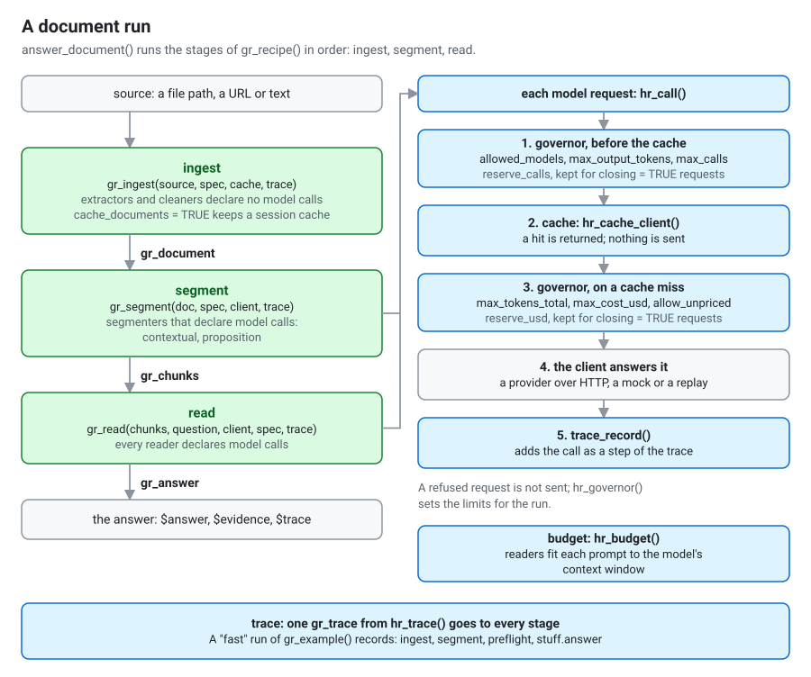

harnessr asks a large language model questions about your documents (a report, a contract, a folder of research papers) and returns the answer with a record of how it was reached: which parts of the document the model saw, what it was asked, what it said, and what that cost. You need no previous experience with language models. This guide covers the few ideas you need, then installing the package, then a first question from start to finish.
Everything below runs without an account or an internet connection, so you can follow along for free.
A few ideas first
The model runs somewhere else. A large language model (an LLM) such as GPT is a program run by a provider: OpenAI, Google, or a model on your own computer. harnessr sends it text over the internet and reads the reply. Commercial providers charge for each request.
Text is measured in tokens. Models read text as tokens, which are pieces of words. In English a token is roughly four characters, so a page of text is several hundred tokens. Providers charge per token, both for the text you send and, at a higher rate, for the text the model writes back.
hr_count_tokens("Revenue rose to 45.2 million dollars in fiscal 2024.")
#> [1] 20harnessr estimates token counts itself, without asking the provider, so it can work out what a request will cost before sending it.
A model can only take in so much at once. The most text a model accepts in a single request is its context window. A long report may not fit, and even when it does, models tend to overlook details in the middle of a very long prompt. harnessr therefore cuts documents into smaller pieces, called chunks, and puts the question to the chunks in some order.
That makes three decisions, and harnessr keeps them separate so you can see and change each one:
- Ingest: get the text out of the file and tidy it.
- Segment: cut the text into chunks.
- Read: decide how the model works through the chunks. It can take all of them in one request, each one separately, or only the most relevant few, among other strategies.
A fourth choice, which model answers, is independent of all three.
vignette("ingest"), vignette("segment") and
vignette("readers") cover the three steps in depth.
Each step is a registry you can extend without editing the package
(vignette("extending")). The built-in entries:
- Ingest has 6 extractors and 14 individually toggleable cleaners.
- Segment has 9 segmenters.
- Read has 12 strategies, each with a distinct traversal signature.
Any ingest composes with any segmenter and any reader.
gr_recipe() binds one of each into a named pipeline. Run a
recipe alongside others in gr_compare() and it gives the
same $answer and $chunks_used, byte for byte,
as when you run it alone.
Models can make things up. A model may state something the document never says, and it can do so fluently. harnessr cannot prevent that. It records which text each answer rests on, checks quotations against the document, and tells you when anything went wrong. The first example below shows where to look.
Installing
harnessr needs R 4.1 or later. Install it from GitHub:
install.packages(c("remotes", "knitr", "rmarkdown"))
remotes::install_github("elkronos/harnessr", build_vignettes = TRUE)The package and its repository were called readgpt up to version
0.6.0. Caches and recordings made under that name still answer. The v1
functions and the readgpt.* options are removed;
NEWS.md lists each one with its replacement.
build_vignettes = TRUE also installs these guides, so
vignette() can open them. Building them needs
knitr, rmarkdown and Pandoc. Pandoc comes with
RStudio; without RStudio, install it from https://pandoc.org/installing.html first, or leave out
build_vignettes = TRUE.
The package itself depends only on digest,
httr and jsonlite. Some file types and
features need an extra package. Each is optional, so install only what
you use:
| to do this | install |
|---|---|
| read PDFs | pdftools |
| read Word documents and web pages |
xml2 (or readtext, for Word only) |
| read scanned pages and images (OCR) |
tesseract and magick
|
| use a provider other than OpenAI | ellmer |
| run many requests at once |
future and future.apply
|
| count tokens with OpenAI’s own tokenizer |
reticulate, with Python’s tiktoken
|
| use the point-and-click app | shiny |
If you ask for something that needs a package you do not have, harnessr says which one. It stops, unless it can carry on without it. For example, it runs requests one at a time when the parallel packages are missing.
Connecting to a model
To use a real model you need an account with a provider and an API key, a password that identifies your account to the provider’s servers. For OpenAI, create one at https://platform.openai.com.
Keep the key out of your scripts. The usual place is your
.Renviron file, which R reads when it starts:
file.edit("~/.Renviron")
# add this line, save the file, then restart R:
# OPENAI_API_KEY=sk-...hr_api_key() checks that R can see it, and stops with an
explanation if it cannot:
You can give the key in three places. An argument to
hr_client() wins over the harnessr.api_key
option, which wins over OPENAI_API_KEY:
Sys.setenv(OPENAI_API_KEY = "sk-...") # for the session
options(harnessr.api_key = "sk-...") # the form for an .Rprofile
cl <- hr_client(api_key = "sk-...") # per client, for a Shiny app with many usersIf your project is a git repository, list .Renviron and
.Rprofile in its .gitignore; harnessr’s own
repository ignores both.
If the key is missing, answer_document(),
gr_read_many() and gr_compare() stop before
they read your document, with a gr_auth_error that gives
the same explanation. A missing key therefore does not cost you an OCR
pass over a long scan first.
Behind a company gateway, pass the headers the gateway wants, such as
Azure’s api-key, to hr_client(headers = ):
cl <- hr_client(
base_url = "https://gateway.example.com/openai/v1", api = "chat",
headers = c("api-key" = Sys.getenv("GATEWAY_KEY"), Authorization = NA))Naming a header replaces the automatic Authorization,
and NA suppresses one, which keeps a personal
OPENAI_API_KEY off the gateway. Naming any header makes the
key optional, so a client that authenticates through headers needs no
key. hr_options(api_headers = ) sets the same headers for
every client, the form for a project’s .Rprofile.
The built-in client speaks to OpenAI-compatible
/responses and /chat/completions endpoints.
For other providers, hr_ellmer_client() hands the transport
to the ellmer package, which
covers about twenty providers, local models through Ollama among
them.
The spending limit is on by default, and it can hold only for a model with a registered price. harnessr ships no prices, so register the model you built the ellmer object with, at your provider’s current prices in US dollars per million tokens. A local model costs nothing, so register it at zero:
library(ellmer)
hr_register_model("claude-sonnet-4-5", context_window = 200000, max_output = 64000,
input_usd = 3, output_usd = 15)
cl <- hr_ellmer_client(chat_anthropic(model = "claude-sonnet-4-5"))
answer_document("report.pdf", "What was revenue?", "thorough", client = cl)
hr_register_model("llama3.1", context_window = 128000, max_output = 4096,
input_usd = 0, output_usd = 0)
cl <- hr_ellmer_client(chat_ollama(model = "llama3.1"))Without a registered price, a run under max_cost_usd is
sent with an hr_unpriced_model warning, and the spending
limit does not count it. vignette("runs") covers unpriced
models and what changes through ellmer (temperature and embeddings).
Anything else, such as a model behind a queue, goes through
hr_backend_client(). Give it any function of
messages and params that returns a string, and
that function becomes the transport. Limits, the trace, caching and
replay work the same way on every client. Register the model’s real
context window with hr_register_model(), because harnessr
sizes each prompt from it.
Practising without a key
You do not need a real model to learn. hr_mock_client()
builds a stand-in that replies with whatever an R function returns, and
you can use it anywhere a real model goes. This one always gives the
same answer, which is enough to see how everything else works:
cl <- hr_mock_client(function(messages, params) "Revenue was 45.2 million dollars.")
old <- hr_options(verbose = FALSE)verbose = FALSE stops harnessr printing a line for each
stage; leave it on in your own work while you are learning. In an
interactive session it also keeps a line up to date with how far a long
read has got and what it has spent. hr_options() returns
the settings it replaced, so you can restore them later with
hr_options(old).
Your first question
answer_document() does all three steps in one call.
harnessr includes a short example document, an annual report:
ans <- answer_document(gr_example(), "What was revenue in 2024?", client = cl)
ans$answer
#> [1] "Revenue was 45.2 million dollars."That call ran three stages in order. gr_ingest() handed
a gr_document to gr_segment(), which handed a
gr_chunks to gr_read(). Each request to the
model goes through hr_call(), where the governor checks the
limits and, for a client wrapped in hr_cache_client(), the
cache answers a repeat. One trace records every step:

With a real model you would leave out client = and point
it at your own file:
ans <- answer_document("annual-report.pdf", "What was revenue in 2024?")The first argument can be a path to a file, a web address, or the
text itself. A missing file whose name ends in an extension harnessr
reads (.pdf, .docx, .md and so
on) is an error. Any other string is read as the text of the document,
including a path with a mistyped extension:
"reports/2024/annual-report.pfd" becomes a one-line
document about a file name. ans$document$source shows which
happened: the path for a file, the address for a download,
<inline text> for a string.
Checking the answer
ans holds much more than the answer. Look at three
things before relying on it.
partial says whether anything went
wrong. It is TRUE if:
- a request failed;
- chunks were left out because they did not fit;
- a limit on requests or spending stopped the run early;
- a reading strategy fell back to a simpler method;
- pages of the document never became text (a scanned page read without OCR, for example).
ans$partial
#> [1] FALSEWhen it is TRUE, printing the answer says why, and
ans$notes holds the details. Here is a “model” that fails
every request, as a network outage would:
broken <- hr_mock_client(function(messages, params) stop("no connection"))
bad <- answer_document(gr_example(), "What was revenue in 2024?",
client = broken)
bad
#> <gr_answer> reader=stuff (PARTIAL)
#> Q: What was revenue in 2024?
#> 1 model call(s), 611 in / 0 out tokens, 1 error(s), $0.0000 across mock-model, prices as of 2026-11
#> ---
#> Not found in the part of the document that was read.
#> ---
#> Partial because: first error: no connectionThe run did not stop with an error. It finished, and the failure is
recorded on the result, so check partial every time.
harnessr also keeps any warnings raised along the way in
ans$warnings as well as printing them, so you can read them
after the console has scrolled past.
is_not_found() says whether the document had the
answer at all. Every reading strategy tells the model to reply
with a fixed marker when the text it was shown does not answer the
question. That lets you tell “the document does not say” apart from an
answer:
is_not_found(ans$answer)
#> [1] FALSE
is_not_found(bad$answer)
#> [1] TRUEFor bad, the marker means “no answer came back”, and
partial says that was a failure rather than a finding.
A question can also assume something the document contradicts, such as “Why did revenue fall?” of a report in which revenue rose. The model then either answers as if the assumption were true or replies with the marker.
Add premise = TRUE to the call and harnessr tells the
model that, when the document says the opposite, it should say so in one
sentence giving what the document states. That sentence is the answer
and ans$premise, and is_not_found() is
FALSE for it. A document that is merely silent still gets
the marker. premise is off by default. The correction is
the model’s own reading, and harnessr does not check it
(?gr_read_spec).
evidence shows what the answer rests
on. Each row is a chunk the answer drew on, with where it came
from: the page, for a PDF, and the heading it sits under. This short
report fitted in a single chunk spanning several headings, so there is
one row and both are empty:
ans$evidence[, c("chunk_id", "page", "section")]
#> chunk_id page section
#> 1 1 NA NAOn a long document there is a row for every chunk used, and
page and section tell you where to find the
passage. The contents of each row’s text depend on the
reading strategy. When the model is asked to quote the document,
harnessr checks every quotation against the text and marks the answer
partial if one is not there.
vignette("readers") shows both.
To see the passages in place, write the answer out as a page.
gr_audit_report() shows the answer, whether it is partial,
the cost, and each passage with its page and section, with the quotation
or the answer’s numbers highlighted. In an interactive session it opens
the page for you:
gr_audit_report("answer.html", answer = ans)What it cost
Every result carries a trace: each request sent, each reply, and the tokens both used.
hr_trace_summary(ans$trace)[, c("calls", "tokens_in", "tokens_out")]
#> calls tokens_in tokens_out
#> 1 1 611 13
hr_trace_cost(ans$trace)[, c("model", "calls", "usd")]
#> model calls usd
#> 1 mock-model 1 0as.data.frame() gives one row per request, with its cost
and how long it took. The prompt and reply
columns hold exactly what was sent and what came back:
as.data.frame(ans$trace)[, c("stage", "tokens_in", "tokens_out", "usd", "seconds")]
#> stage tokens_in tokens_out usd seconds
#> 1 stuff.answer 611 13 0 0.001usd comes from the prices in harnessr’s model registry
(hr_models()). The mock costs nothing. For a real model,
harnessr knows the limits but ships no prices, because providers change
prices more often than the package is released. You set the price you
pay, in US dollars per million tokens. Until you do, the model’s cost is
NA, never 0.
Set the default model’s price, then estimate before sending anything. Here is a 120,000-token document with a 4,000-token answer:
# Illustrative figures: use your provider's current prices.
hr_register_model(hr_options("model"), input_usd = 2, output_usd = 12)
hr_estimate_cost(hr_options("model"), input_tokens = 120000, output_tokens = 4000)
#> [1] 0.288vignette("runs") shows how to set the prices of many
models from a file and keep them current.
Two safety limits are on from the start: $5 and 400 requests per document. harnessr checks each request before sending it, against what the run has spent plus the most that request could cost, and does not send one that could pass a limit. A run stopped that way is marked partial, and printing it names the limit that stopped it.
harnessr also refuses, before the first request, a run that could not finish inside the limits: one that would need more than 400 requests, or one whose chunks would cost more than $5 to send once:
unlist(hr_options()[c("max_cost_usd", "max_calls")])
#> max_cost_usd max_calls
#> 5 400Change them with hr_options(), for example
hr_options(max_cost_usd = 20).
vignette("runs") covers the other limits, and how to cache
a run so you pay for it once.
The default models also reason before they answer: they work
through the question in text you never see, and it is charged as text
the model writes back. effort sets how much, for example
"low" or "high". Unless you set it, harnessr
sends no effort and the provider’s default applies. harnessr sends it
only to a model it knows reasons. The mock is not one, so the example
below gives it the default model’s name to stand in for that model:
low <- answer_document(gr_example(), "What was revenue in 2024?",
client = cl, model = hr_options("model"), effort = "low")
as.data.frame(low$trace)[, c("stage", "model", "effort")]
#> stage model effort
#> 1 stuff.answer gpt-5.6-terra lowWith a real client on the default model, effort = "low"
alone is enough. The trace records the effort each request carried; the
effort column appears only when a request carried one. Less
reasoning costs less.
You can also set effort by stage: low for the many
routine requests, high for the few that judge.
?gr_read_spec lists the stages and suggests a starting
point, and vignette("effort") covers effort in full.
Choosing a recipe
answer_document() made the three decisions using a
recipe, a named combination of choices. The default,
"auto", picks one of two by the document’s length:
"fast", which sends the whole document in one request, for
up to 50,000 tokens (less on a model with a small context window), and
"thorough", one request per chunk plus the requests that
merge the replies, for anything longer. ans$recipe says
which it picked:
ans$recipe
#> [1] "fast"The built-in recipes:
do.call(rbind, lapply(names(gr_recipes()), function(n) {
r <- gr_recipes(n)
data.frame(recipe = n, chunks = r$segment$method, reading = r$read$reader)
}))
#> recipe chunks reading
#> 1 fast paragraph stuff
#> 2 precise sentence skim
#> 3 needle semantic retrieve
#> 4 thorough paragraph map_reduce
#> 5 survey structural hierarchical
#> 6 narrative paragraph refine
#> 7 scanned page rerank
#> 8 research structural iterative
#> 9 consensus recursive ensemble
#> 10 legacy paragraph map_reduceA starting point for each kind of job:
| your document and question | try |
|---|---|
| short enough to send whole | "fast" |
| one fact somewhere in a long document | "needle" |
| every mention has to be found | "thorough" |
| long, with headings, and you want a summary | "survey" |
| scanned pages, forms or invoices | "scanned" |
| an argument that builds through the text | "narrative" |
| a question that needs several facts combined | "research" |
| high stakes, and you want a second opinion | "consensus" |
Pass the name as the third argument:
fast <- answer_document(gr_example(), "What was revenue in 2024?", "fast",
client = cl)
fast$reader
#> [1] "stuff"Recipes differ a great deal in cost. "thorough" sends
every chunk to the model separately, so a long document means many
requests. "fast" makes one, and "needle" one
plus the embeddings requests that cut the document into chunks and rank
them. vignette("readers") explains each reading strategy
and when to use it, and how to change a recipe’s settings or build your
own.
To choose a recipe or a model on more than one document,
hr_benchmark() runs each configuration several times over a
labelled set of questions under one spending limit.
hr_report() gives accuracy, paired differences and cost,
with intervals that treat the questions about one document as a cluster.
See vignette("evaluate").
What you can change
A recipe is a set of settings, and you can change every one of them. The table groups them by the stage of a run they belong to:
settings <- gr_settings_table()
table(factor(settings$stage, unique(settings$stage)))
#>
#> ingest segment read screen extract synthesise evaluate
#> 21 20 50 33 10 29 30
#> options
#> 35| stage | settings | where you set it | guide |
|---|---|---|---|
| ingest | 21 |
gr_ingest_spec(), or by name in
answer_document()
|
vignette("ingest") |
| segment | 20 |
gr_segment_spec(), or by name |
vignette("segment") |
| read | 50 |
gr_read_spec(), or by name; gr_read_many()
for a folder |
vignette("readers") |
| screen | 33 | the arguments of gr_screen() and the functions beside
it |
vignette("review") |
| extract | 10 | the arguments of gr_extract()
|
vignette("review") |
| synthesise | 29 | the arguments of gr_synthesise() and the functions
beside it |
vignette("review") |
| evaluate | 30 | the arguments of hr_benchmark(),
hr_report() and hr_judge()
|
vignette("evaluate"),
vignette("compare")
|
| options | 35 |
hr_options(), for the whole session |
vignette("runs") |
Most runs change a few of them, and gr_settings_table()
marks those basic. Here are the ones that matter first,
with their defaults and when to change each:
| stage | setting (default) | change it when |
|---|---|---|
| ingest |
clean ("standard") |
the text carries captions, a reference list or running heads you do
not want read ("academic", "scan"), or a
cleaner removed something you need |
| ingest |
ocr ("auto") |
scanned pages that carry a printed header or stamp of 40 or more
characters come back holding only that text ("always"), or
pages of figures in a born-digital file are read by OCR for nothing
("never") |
| ingest |
min_chars (20) |
short documents are refused that should be read, or near-empty extractions get through |
| segment |
method ("paragraph") |
the document has headings to cut at ("structural"),
pages that stand alone ("page"), or no paragraph breaks
("sentence") |
| segment |
max_tokens (1200) |
a reader that sends every chunk makes too many requests (raise it), or one that picks a few sends too much text around the answer (lower it) |
| segment |
overlap_tokens (0) |
answers fall across the cut between two chunks |
| read |
reader ("map_reduce") |
the question is one fact in a long document
("retrieve"), or needs exact quotations
("skim"); see “Choosing a recipe” above |
| read |
model (the client’s) |
a cheaper model answers as well on your documents, or a stronger one is needed |
| read |
top_k (6) |
the chunk with the answer is not among those sent (raise it), or the prompt carries many unrelated chunks (lower it) |
| read |
cite (FALSE) |
you need to trace each statement to a chunk and a page |
| read |
verify (FALSE) |
you will act on quotations without reading the source |
| read |
recipe, store and
max_total_usd of gr_read_many()
|
a folder needs another recipe, a run long enough to be interrupted, or a cap on the whole run |
| screen |
screen_tokens of gr_screen() (all that
fits) |
you screen on titles and abstracts, or the deciding sentence lies past the cap |
| screen |
recall_target and conf (0.95 each),
n and of of gr_reference()
|
your protocol promises a different recall, or the sample is too small to show it |
| extract |
resolve ("first") |
chunks of one document disagree and the later value is the right one |
| extract |
require_quote (FALSE) |
the protocol says no quote, no datum |
| synthesise |
coherence (FALSE) |
the sections read as separate pieces, with terms that drift and studies introduced twice |
| synthesise |
cite_style ("auto") |
the review needs numbered citations or plain markers |
| evaluate |
runs (5) of hr_benchmark()
|
the report’s notes ask for 10 |
| evaluate |
governor of hr_benchmark() (the options’
limits) |
always, for a benchmark: size it for arms x items x runs x requests per run |
| options |
max_cost_usd (5) and max_calls (400) |
a run is stopped that should finish, or you want a mistake to stop sooner |
| options |
cache_dir (a temporary directory) |
a long run should be paid for once and survive the session |
vignette("settings") lists all 228 with their defaults
and where each default came from, and gr_settings_table()
returns them in R. The settings page links each important one to a
walkthrough at the end of one of ten guides. Each walkthrough says what
the setting trades off, the signs that point to changing it and how to
test a change. To compare the values of a setting,
hr_sweep() builds one arm per value, as
vignette("compare") shows.
More than one document
For a folder of documents, gr_read_many() asks the same
question of each file and returns one row per document. For a literature
review, gr_screen() decides which documents meet your
criteria, gr_extract() builds a table of the details you
ask for, and gr_synthesise() writes up the findings with
each statement citing the study it came from.
vignette("review") covers each of these.
Where to go next
-
vignette("core"): the calls underneath every guide here: clients, what a call returns, the trace, structured replies and errors by class. -
vignette("models"): what harnessr knows about a model, the prices you set, cost estimates and token counts. -
vignette("context"): how a prompt is kept inside a model’s context window, and what is cut when it does not fit. -
vignette("effort"): how hard a reasoning model reasons, by stage or raised only when a stage goes wrong, and what that costs. -
vignette("ingest"): getting text out of PDFs, Word files, web pages and scans, and cleaning it. -
vignette("segment"): cutting documents into chunks, and comparing chunkings before you spend anything. -
vignette("readers"): the reading strategies and recipes, what each costs, and how to choose. -
vignette("review"): many documents and literature reviews, from a search export to a written review. -
vignette("compose"): building a run of your own from steps, and comparing it with the recipes. -
vignette("runs"): cost, limits, the trace, caching and replaying a run. -
vignette("extending"): adding your own extractors, cleaners, segmenters, readers and embedders. -
vignette("settings"): every setting of every stage, with its default and where the default came from. -
?hr_options: every option, with its default.
browseVignettes("harnessr") lists all the guides.
Glossary
API key: a password identifying your account to a provider.
Chunk: a piece of a document small enough to send to the model.
Context window: the most text a model accepts in one request.
Embedding: a list of numbers standing for a piece of text, used to find chunks similar to a question.
Evidence: the text an answer rests on, in
ans$evidence.
LLM: large language model, the program that reads and writes text.
Mock client: a stand-in for a model that runs an R function, for practising and testing without cost.
Partial: ans$partial is
TRUE when a request failed, chunks did not fit and were
left out, the run stopped early, a reading strategy fell back to a
simpler method, or pages of the document never became text. Printing the
answer says which.
Prompt: the text sent to a model in one request.
Provider: the company or program that runs the model.
Reader: a strategy for working through the chunks.
Recipe: a named combination of an ingest, a segmentation and a reader.
Segmenter: a method of cutting text into chunks.
Token: the unit models read and providers charge by, roughly four characters of English.
Trace: the record of every request and reply in a run.